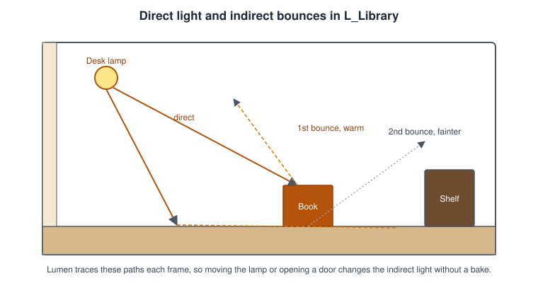
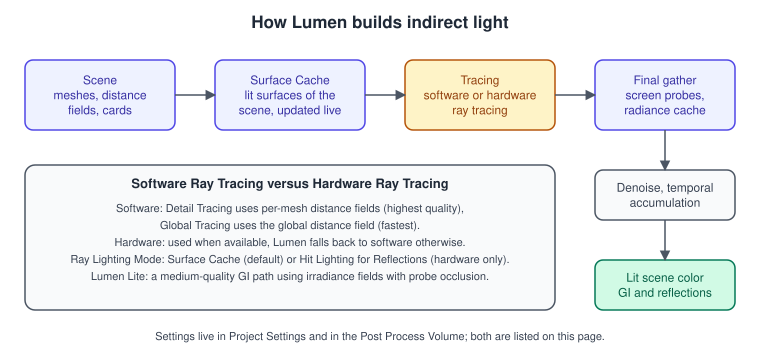
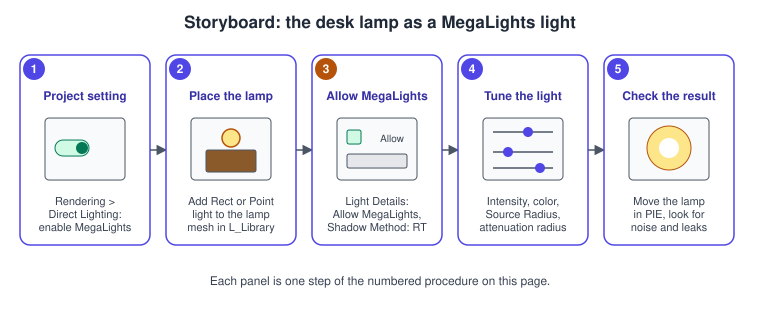
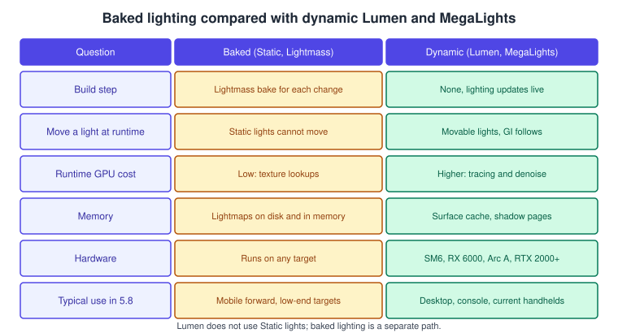

Lighting, Lumen and MegaLights
|
This content was generated with the assistance of AI and should be verified against the official documentation before being relied on in production. |
Light is what makes the Bookshelf feel like a room: warm light from the desk lamp falling on a leather cover, bounced light from the wooden floor tinting the lower shelves, soft shadows under each book. Unreal Engine 5 has two philosophies for this. The dynamic path computes lighting every frame, with Lumen for global illumination and reflections, Virtual Shadow Maps for shadows from the sun and large lights and, since 5.8, production-ready MegaLights for many shadowed local lights. The baked path precomputes lighting into lightmaps ahead of time and costs almost nothing at runtime. This page covers both, explains the light types, mobilities and settings that sit underneath, and ends with the Bookshelf’s lighting set-up.
The facts on this page were checked in November 2026 against the Unreal Engine 5.8 documentation (released 17 June 2026, latest hotfix found 5.8.4). Lumen and MegaLights need Shader Model 6 and a capable GPU: hardware ray tracing requires an NVIDIA RTX 2000 series,
AMD RX 6000 series, Intel Arc A series or newer card (or an equivalent console), and Epic’s Lumen technical page gives a GTX 1070 as the floor for software ray tracing. MegaLights runs on hardware-ray-tracing-capable PCs and on PlayStation 5 and
Xbox Series X and S, and is not supported on mobile, Switch or previous-generation consoles. The running example is the library level L_Library, whose desk lamp is a MegaLights local light. Engine-neutral lighting and global illumination theory is in
Lighting and Shading Models and Shadows and Global Illumination; Unity’s counterparts are in
Materials, Textures and Lighting.
Lights: types, mobility and properties

Light types
| Light | Use |
|---|---|
Directional Light |
The sun or moon: a source at near-infinite distance, efficient for large exteriors and dense foliage. |
Sky Light |
Captures the scene’s background (sky, distant geometry) and applies it as ambient light to the level, lighting interiors through openings. Combined with a Sky Atmosphere and Exponential Height Fog it gives a time-of-day sky. |
Point Light |
Emits in all directions from one point, like a bulb. |
Spot Light |
A point light limited to a cone. |
Rect Light |
Emits from a rectangular surface, giving soft, realistic shadows; a window, a screen or a lamp shade. |
Point, spot and rect lights are local lights that share most properties. The usual per-light settings are Intensity (with Intensity Units: unitless, candelas or lumens, so a bulb can be specified like a real one), Light Color or Temperature, Attenuation Radius (where the light is cut off), Source Radius, Soft Source Radius and Source Length (the size of the emitter, which makes highlights and shadows softer), an IES Profile texture for real-world light distributions, a Light Function material that modulates the light (a flicker, a window pattern), Lighting Channels that decide which meshes a light affects, Cast Shadows, Indirect Lighting Intensity and Volumetric Scattering Intensity.
Mobility
Each light has a mobility, and in the classic pipeline it decides whether its lighting can be baked:
| Mobility | What it does | Cost and limits |
|---|---|---|
Static |
Cannot change or move at runtime. Lightmass precomputes direct and indirect light into per-level lightmaps. |
After the build it has no runtime cost; lowest mutability. Movable objects are lit through Volumetric Lightmaps or the Indirect Lighting Cache, so they do not blend perfectly. |
Stationary |
Cannot move, but can change colour and intensity or be turned off. Indirect light and some shadows are baked; direct light and shadows on movable objects are dynamic. |
Added cost; a single object can be affected by at most four Stationary lights. |
Movable |
Can move and change every property. Casts only dynamic shadows. |
Non-shadowing movable lights are inexpensive; shadow-casting ones are the most expensive. |
With Lumen, the mobility of a light means something different: Static lights are not supported (their lightmaps are hidden when Lumen is enabled) and the lights are Movable or Stationary in practice. Put dynamic lights as Movable and decide the cost with the shadow method.
Shadows
Virtual Shadow Maps (VSM) are the default shadow method for new projects (projects created before 5.0 must opt in): Project Settings > Engine > Rendering > Shadows > Shadow Map Method, or r.Shadow.Virtual.Enable. The idea is a virtual shadow map of 16K by 16K texels per light, split into 128 by 128 pages that are allocated only where the view needs them and cached between frames.
Directional lights use clipmaps (by default levels 6 to 22, from about 64 cm near the camera to about 40 km); spot lights use one 16K map with a mip chain; point lights a cube map. Epic’s page says VSMs are designed to be used with Nanite and replace stationary precomputed shadows, pre-shadows, per-object shadows, cascaded shadow maps and dynamic shadows for local lights.
| Setting | Effect |
|---|---|
|
Shadow-map ray tracing rays per sample for soft shadows; 0 disables SMRT. Samples per ray 4 to 8 work well. |
|
Lowering a bias by 1 doubles the resolution, at a performance cost. |
|
Size of the page pool (memory). |
|
Page caching between frames; on by default. |
Directional light Source Angle |
Controls penumbra softness of the sun. |
Shadow cost has two parts: depth rendering, which scales with the pages rendered and the geometry drawn into them (cache invalidations drive it, and non-Nanite geometry is much more expensive than Nanite), and projection, which scales with the samples taken across the screen. Nanite geometry always renders into VSMs regardless of distance. For the local lamp, MegaLights can shadow with ray tracing instead and avoids per-light shadow-map cost.
Lumen
Lumen is the default global illumination and reflection system for new projects: fully dynamic indirect light that reacts to moving lights, moving geometry and changing materials, with no build step. Lumen GI replaces Distance Field Ambient Occlusion and Lumen reflections replace screen-space reflections. Epic says existing projects converted from UE4 do not enable it automatically. Enable it in Project Settings > Rendering > Dynamic Global Illumination and Reflections (the two methods are independent). Enabling Lumen also enables Generate Mesh Distance Fields, which software ray tracing needs, and the engine restarts.

How it works
Lumen traces rays in screen space first, then falls back to a more reliable method when a ray hits nothing or goes behind a surface. The fallback has two backends: Software Ray Tracing against signed distance fields, and Hardware Ray Tracing against triangles. Lighting at a ray hit is looked up in the Surface Cache, an automatic parameterisation of nearby scene surfaces, built from cards that are generated offline for each static mesh (by default 12 per mesh, adjustable with Max Lumen Mesh Cards). The cache is updated over several frames, which is how many dynamic lights and several bounces stay affordable and also why a global lighting change can take a few seconds to settle. A final gather integrates incoming light at the pixels, and denoising and temporal accumulation clean the noise.
-
Software Ray Tracing Mode: Detail Tracing uses per-mesh distance fields (highest quality) and Global Tracing the global distance field (fastest).
-
Use Hardware Ray Tracing when available tells Lumen to prefer triangles; if the GPU, RHI or operating system lacks support it falls back to software. Hardware RT adds notable scene-update cost with more than about 100,000 instances.
-
Ray Lighting Mode: Surface Cache (default, cheaper) or Hit Lighting for Reflections (evaluates lighting at the hit, higher quality, hardware RT only; project-wide or per Post Process Volume).
-
Standalone Lumen reflections without Lumen GI require hardware RT; reflection bounces above 1 require hardware RT with hit lighting.
Settings
Project Settings: Dynamic Global Illumination Method, Reflection Method, Use Hardware Ray Tracing when available, Ray Lighting Mode, High Quality Translucency Reflections, Software Ray Tracing Mode, Support Hardware Ray Tracing, Generate Mesh Distance Fields, Distance Field Voxel Density and Allow Static Lighting.
Post Process Volume: under Global Illumination, Lumen Scene Lighting Quality, Lumen Scene Detail, Lumen Scene View Distance, Final Gather Quality, Screen Traces, Max Trace Distance and Scene Capture Cache Resolution; under GI Advanced, the update speeds, Diffuse Color Boost and skylight leaking; under Reflections, Quality, Ray Lighting Mode, Max Roughness To Trace, Max Reflection Bounces and Max Refraction Bounces (r.Lumen.Reflections.MaxBounces overrides the bounce limit, up to 64).
// Source/Bookshelf/Public/BookshelfLightingLibrary.h
#pragma once
#include "CoreMinimal.h"
#include "Kismet/BlueprintFunctionLibrary.h"
#include "BookshelfLightingLibrary.generated.h"
class APostProcessVolume;
class ULightComponent;
UCLASS()
class BOOKSHELF_API UBookshelfLightingLibrary : public UBlueprintFunctionLibrary
{
GENERATED_BODY()
public:
/** Overrides Lumen Scene Lighting Quality and Final Gather Quality on a Post Process Volume (1 = default). */
UFUNCTION(BlueprintCallable, Category = "Bookshelf|Lighting")
static void SetLumenQuality(APostProcessVolume* Volume, float SceneLightingQuality, float FinalGatherQuality);
/** Marks a light as taking part in MegaLights (or opts it out) and sets its shadow method. */
UFUNCTION(BlueprintCallable, Category = "Bookshelf|Lighting")
static void ConfigureMegaLight(ULightComponent* Light, bool bAllow, bool bUseVirtualShadowMap);
};// Source/Bookshelf/Private/BookshelfLightingLibrary.cpp
#include "BookshelfLightingLibrary.h"
#include "Components/LightComponent.h"
#include "Engine/PostProcessVolume.h"
void UBookshelfLightingLibrary::SetLumenQuality(APostProcessVolume* Volume, float SceneLightingQuality, float FinalGatherQuality)
{
if (Volume == nullptr)
{
return;
}
FPostProcessSettings& Settings = Volume->Settings;
Settings.bOverride_LumenSceneLightingQuality = true;
Settings.LumenSceneLightingQuality = FMath::Clamp(SceneLightingQuality, 0.25f, 4.0f);
Settings.bOverride_LumenFinalGatherQuality = true;
Settings.LumenFinalGatherQuality = FMath::Clamp(FinalGatherQuality, 0.25f, 4.0f);
}
void UBookshelfLightingLibrary::ConfigureMegaLight(ULightComponent* Light, bool bAllow, bool bUseVirtualShadowMap)
{
if (Light == nullptr)
{
return;
}
Light->bAllowMegaLights = bAllow;
Light->MegaLightsShadowMethod = bUseVirtualShadowMap
? EMegaLightsShadowMethod::VirtualShadowMap
: EMegaLightsShadowMethod::RayTracing;
Light->MarkRenderStateDirty();
}Mesh and level requirements
Lumen works best on geometry built for it. Epic’s technical page lists: walls, floors and ceilings should be separate modular meshes (the surface cache supports only meshes with simple interiors); walls should be at least 10 cm thick to avoid light leaking; closed geometry is preferred over thin one-sided meshes seen from behind; high-polygon meshes, foliage and instanced meshes need Nanite for efficient cache capture; and with software ray tracing, Generate Mesh Distance Fields must be on and scaled-up instances may need a higher Distance Field Resolution Scale. Skeletal meshes have no offline cards; six cards are placed around their pre-skinned bounds, so coverage is limited during deformation. Software ray tracing represents static meshes, instanced components and landscape only (foliage needs Affect Distance Field Lighting), does not support World Position Offset, covers 200 m of scene by default (extendable to 800 m) and then falls back to screen traces; Far Field traces reach about 1 km with World Partition HLOD but need configuration.
The Bookshelf’s shelf and walls follow these rules, and the two Visualization view modes make them visible: Lumen Scene shows Lumen’s version of the world, and Surface Cache highlights insufficient coverage in pink, areas that do not bounce light and look black in reflections.
Limitations
-
Static lights are not supported and lightmaps are hidden; Lumen GI cannot be combined with static lightmap lighting (reflections can use lightmap GI). Existing lightmaps stay in memory and on disk until Force No Precomputed Lighting is enabled in World Settings and the level is rebuilt and saved.
-
Lumen is not available with Forward Shading, and Epic’s technical page lists previous-generation consoles and VR as unsupported.
-
Clear coat: only the top layer can be sharp; the bottom layer is treated as rough.
-
Very small, bright emissive areas can produce noise; a Max Trace Distance that is too small lets light leak into large spaces such as caves.
-
Material Ambient Occlusion needs Allow Static Lighting disabled; Bent Normal Maps cost a lot for little gain.
Scalability levels and Lumen Lite
Lumen is scaled through sg.GlobalIlluminationQuality and sg.ReflectionQuality. Epic’s performance guide describes the levels: Cinematic targets Movie Render Queue output, Epic a 30 fps console budget, High a 60 fps console budget, Medium 60 fps on Switch 2 and medium-spec PCs (reflections use SSR on smooth surfaces and GI uses the Irradiance Final Gather), and Low
disables Lumen, leaving an unshadowed sky light. Each lower level costs roughly half the one above. Frame budgets at 1080p are about 8 ms for 30 fps and 4 ms for 60 fps for GI, reflections and volumetric fog together, and TSR upscales the result to 4K.
Lumen Lite (beta in 5.8) is the release-notes name for the medium-quality GI path: it uses irradiance fields with probe occlusion, is about twice as fast as Lumen high quality, which targets 60 fps on PlayStation 5, and is the default path for current-generation handheld consoles (it is also supported on PC). In the performance guide the same path is selected through the Medium level, r.Lumen.FinalGatherMethod 0; on platforms without irradiance fields, Distance Field Ambient Occlusion replaces Lumen GI for large-scale occlusion. Profile with stat gpu (it shows the three Lumen passes: Scene Lighting, Screen Probe Gather and Reflections) or ProfileGPU.
MegaLights
MegaLights is a direct-lighting path for many dynamic, shadowed area lights. Instead of evaluating every light at every pixel it uses stochastic importance sampling: a fixed number of rays per pixel choose which lights to sample and trace shadows towards, and a denoiser cleans the result. The cost is therefore roughly constant, independent of the number of lights, which is what lets a scene have hundreds of shadowed lights (candles, screens, shop windows) that the classic deferred path could not afford. It is production ready in 5.8, whose release notes list much-reduced noise, transmission (subsurface scattering), froxel-based translucency, high-quality front-layer translucency lighting, IES support for volumetrics and translucency, lighting channels, cloud shadows and first-person weapon support, together with the debug views Light Finder, Ray Visualizer and shadow-caster views.
Enabling and per-light control
-
Project Settings > Rendering > Direct Lighting: enable MegaLights; the editor prompts you to enable Support Hardware Ray Tracing as well, which is recommended.
-
To disable it for a scalability level or device profile, set
r.MegaLights.Allow 0. A Post Process Volume can enable or disable it for part of the project. -
Once enabled, all local lights are handled by MegaLights by default. Allow MegaLights on a light opts it in or out; an opted-out light falls back to the other shadowing methods, which can cost much more.
-
MegaLights Shadow Method: Ray Tracing (the default and recommended, no per-light cost, correct area shadows, dependent on the quality of the ray tracing acceleration structure) or Virtual Shadow Maps (adds memory, CPU and GPU cost, approximates area shadows, but shadows directly from Nanite geometry).
-
Niagara particle lights participate when the Light Renderer module has Allow Mega Lights (and Mega Lights Cast Shadows) enabled.
Directional lights are disabled by default in MegaLights and are enabled with r.MegaLights.DirectionalLights 1; Epic recommends deferred lighting with VSM for strong sunlight and MegaLights for dimmer sources such as moonlight. Other limits: MegaLights is incompatible with the forward renderer and is not available on mobile; water, clouds, heterogeneous volumes and local volumetrics are not supported; alpha-masked surfaces need r.MegaLights.HardwareRayTracing.EvaluateMaterialMode 1, which costs noticeably, so avoid alpha masking where you can; Far Field needs World Partition HLOD1 built; strong lights with huge bounds add noise and lights inside geometry waste samples.
| Variable | Purpose |
|---|---|
|
Quality and cost: samples per pixel and the resolution of the sampling. |
|
Falloff of light influence. |
|
Shadow and geometry range. |
|
Debug and visualisation views. |
The desk lamp
The lamp is an actor with a mesh and a Rect Light (a lamp shade is an area emitter), set to Movable, with MegaLights enabled and ray-traced shadows.
// Source/Bookshelf/Public/DeskLamp.h
#pragma once
#include "CoreMinimal.h"
#include "GameFramework/Actor.h"
#include "DeskLamp.generated.h"
class UStaticMeshComponent;
class URectLightComponent;
UCLASS()
class BOOKSHELF_API ADeskLamp : public AActor
{
GENERATED_BODY()
public:
ADeskLamp();
UPROPERTY(VisibleAnywhere, BlueprintReadOnly, Category = "Lamp")
TObjectPtr<UStaticMeshComponent> LampMesh;
UPROPERTY(VisibleAnywhere, BlueprintReadOnly, Category = "Lamp")
TObjectPtr<URectLightComponent> LampLight;
/** Intensity in candelas when switched on. */
UPROPERTY(EditAnywhere, BlueprintReadWrite, Category = "Lamp", meta = (ClampMin = "0"))
float OnIntensity = 600.0f;
UFUNCTION(BlueprintCallable, Category = "Lamp")
void SetLampOn(bool bOn);
UFUNCTION(BlueprintPure, Category = "Lamp")
bool IsLampOn() const { return bLampOn; }
protected:
virtual void BeginPlay() override;
private:
bool bLampOn = true;
};// Source/Bookshelf/Private/DeskLamp.cpp
#include "DeskLamp.h"
#include "Bookshelf.h"
#include "Components/RectLightComponent.h"
#include "Components/StaticMeshComponent.h"
ADeskLamp::ADeskLamp()
{
PrimaryActorTick.bCanEverTick = false;
LampMesh = CreateDefaultSubobject<UStaticMeshComponent>(TEXT("LampMesh"));
SetRootComponent(LampMesh);
LampLight = CreateDefaultSubobject<URectLightComponent>(TEXT("LampLight"));
LampLight->SetupAttachment(LampMesh);
LampLight->SetMobility(EComponentMobility::Movable);
LampLight->SetIntensityUnits(ELightUnits::Candelas);
LampLight->SetIntensity(OnIntensity);
LampLight->SetLightColor(FLinearColor(1.0f, 0.78f, 0.52f)); // warm bulb
LampLight->SetAttenuationRadius(450.0f);
LampLight->SourceWidth = 20.0f;
LampLight->SourceHeight = 12.0f;
LampLight->SetCastShadows(true);
// Take part in MegaLights and shadow with ray tracing (no per-light shadow-map cost).
LampLight->bAllowMegaLights = true;
LampLight->MegaLightsShadowMethod = EMegaLightsShadowMethod::RayTracing;
}
void ADeskLamp::BeginPlay()
{
Super::BeginPlay();
SetLampOn(bLampOn);
}
void ADeskLamp::SetLampOn(bool bOn)
{
bLampOn = bOn;
LampLight->SetIntensity(bOn ? OnIntensity : 0.0f);
LampLight->SetVisibility(bOn);
UE_LOG(LogBookshelf, Verbose, TEXT("%s is %s"), *GetName(), bOn ? TEXT("on") : TEXT("off"));
}Procedure: make the desk lamp a MegaLights light

-
Open Project Settings > Rendering > Direct Lighting and enable MegaLights. Accept the prompt to enable Support Hardware Ray Tracing, confirm that the Windows default RHI is DirectX 12 with SM6 (see Rendering Overview) and restart the editor.
-
In
L_Librarydrag aBP_DeskLamp(a Blueprint subclass ofADeskLamp) onto the desk, or add a Rect Light to the lamp mesh. -
Select the light. In Details, make sure Mobility is Movable and tick Allow MegaLights; set MegaLights Shadow Method to Ray Tracing.
-
Tune the look: Intensity Units candelas, Intensity, Light Color or Temperature, Attenuation Radius so that the light stops at the wall, and Source Width and Source Height so that shadows soften with distance.
-
Press Play; move the lamp or turn it on and off with
SetLampOn. Use the MegaLights visualisation views to look for noise and for wasted samples, and check that no light leaks into neighbouring rooms.
Source: MegaLights in Unreal Engine
Choosing between dynamic and baked lighting

The baked path is Static lights, Lightmass and lightmaps. Lightmass computes direct and indirect light during a lighting build and stores it in lightmap textures (and Volumetric Lightmaps for movable objects); quality depends on lightmap resolution (set in the Static Mesh Editor or per actor, checked with the Lightmap Density view mode), and World Settings control the bounce counts, the indirect lighting quality and Volumetric Lightmap detail (halving the detail cell size can multiply memory by up to eight). Its virtues are that it runs on any hardware and costs almost nothing per frame; its costs are build time, no runtime change, and imperfect blending with movable objects. Lightmaps need clean, non-overlapping lightmap UVs on every static mesh.
In practice most 5.8 projects mix the two: dynamic Lumen on desktop and console, and a baked variant of the same level for mobile, using scalability and device profiles to select the path (see Android and Mobile). Keep the two variants in one level with Force No Precomputed Lighting off for the baked build, and test both in packaged builds.
Common mistakes
-
Static lights with Lumen. They are not supported and their lightmaps are hidden; make dynamic lights Movable, and convert baked levels before enabling Lumen.
-
Thin or one-sided walls. Light leaks; make walls at least 10 cm thick and closed.
-
One giant mesh for the whole room. The surface cache needs simple interiors; split floors, walls and ceilings.
-
Forgetting SM6 and hardware RT support. MegaLights and hardware Lumen need them; with software Lumen the quality and the reflection options differ.
-
Expecting MegaLights on the sun. Directional lights are off by default (
r.MegaLights.DirectionalLights 1); keep VSM for strong sunlight. -
Opting a hero light out of MegaLights. A light with Allow MegaLights off falls back to costly shadowing paths; use the ray-traced default.
-
Alpha-masked foliage under MegaLights. It needs the material evaluation mode and costs a lot; prefer Nanite foliage or avoid masking.
-
A tiny Max Trace Distance. Light leaks into big spaces; raise it before raising everything else.
-
Judging Lumen immediately after a change. Global lighting changes take several seconds to propagate through the surface cache.
-
Huge light bounds or lights inside geometry. They add noise and waste samples.
Performance notes
-
Measure with
stat gpuandProfileGPU; Lumen shows as Scene Lighting, Screen Probe Gather and Reflections, VSM as shadow depths and projection, MegaLights as its own passes. -
Lumen costs roughly halve per scalability level; use Medium (Lumen Lite) for handhelds and medium PCs.
-
Raise the roughness threshold for reflection tracing or fall back to SSR on small surfaces; use half-resolution reflections where acceptable.
-
Turn off Visible In Ray Tracing for skyboxes and grass, and disable Affects Distance Field Lighting on unimportant instances, to cut ray tracing and distance-field update cost.
-
Keep component mobility correct: moving a static actor invalidates the static cache.
-
VSM cost is dominated by non-Nanite geometry and cache invalidation; give meshes Nanite and avoid moving casters in large numbers.
-
MegaLights cost is mostly constant, so more lights are cheap, but noise grows with strong lights of large bounds; keep the bounds tight.
-
More on process in Profiling and Optimization.
What changed recently
| Version | Change |
|---|---|
UE 5.8 (June 2026) |
MegaLights is production ready with less noise, transmission, froxel translucency, lighting channels, cloud shadows and new debug views. Lumen Lite (beta) is a medium-quality GI path using irradiance fields, about twice as fast as Lumen high quality. Hardware Lumen and MegaLights require SM6 to be enabled. |
UE 5.0 (April 2022) |
Lumen and Virtual Shadow Maps arrive and become the defaults for new projects, replacing static-first lighting, Distance Field AO and screen-space reflections as the standard path. |
Source: Unreal Engine 5.8 Release Notes
Where the books are outdated
Unreal Engine: Game Development from A to Z (Joanna Lee, John P. Doran and Nitish Misra; ATZ, UE 4.7 to 4.10) covers lighting in module 1 chapter 4 and module 2 chapter 6, and Learning Unreal Engine Android Game Development (Nitish Misra; MIS, UE 4.4 to 4.7) builds its scenes with the same static-lighting approach.
| Book and chapter | What the book shows | What is current in 5.8 |
|---|---|---|
ATZ M1-4, M2-6 |
Static lighting and Lightmass as the default way to light a level. |
Lumen is the default global illumination and reflections system; Virtual Shadow Maps are the default shadows; MegaLights (production ready in 5.8) handles many dynamic lights. Static lights are not supported with Lumen. |
MIS |
Static lighting and Lightmass as the default, in the UE 4.4 to 4.7 editor. |
Baked lighting remains valid for mobile and low-end targets; the 5.8 mobile renderer defaults to multi-pass deferred with dynamic lights and screen-space effects, and Lumen Lite targets current handhelds. |
See also
-
Lighting and Shading Models: light vectors, Blinn-Phong and PBR.
-
Shadows and Global Illumination: shadow maps, ray tracing and probes in general.
-
Advanced Pipeline Stages: ray tracing pipelines and mesh shading.
-
Vulkan Ray Tracing and Metal Ray Tracing: the APIs behind hardware Lumen.
-
Unity Materials, Textures and Lighting and HDRP Overview: Unity’s lighting options.
-
Rendering Overview: RHIs, shader models and renderer paths.
-
Materials and the Material Editor: how surfaces receive light.
-
Nanite and Virtual Geometry: why VSM and Lumen want Nanite meshes.
-
Post-Processing and Cameras: Post Process Volumes and exposure.
-
World Partition and PCG: HLOD for Far Field.
-
Niagara VFX: particle lights.